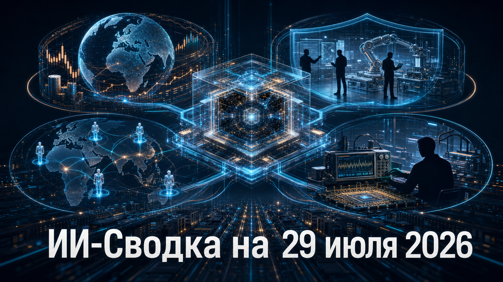

Новостей сегодня меньше, чем обычно
Повестка дня сместилась от новых моделей к экономике и внедрению ИИ в крупных организациях. Рейтинговое агентство Fitch обращает внимание на финансовые риски масштабных вложений в ИИ, а сервисные и инженерные компании строят новые каналы для практического применения моделей и агентных систем.
В выпуск вошли только подтверждённые события, опубликованные в доступном окне. Три продуктово-корпоративных сюжета основаны на заявлениях самих компаний, поэтому заявленные эффекты и масштабы следует отделять от независимой оценки результатов.
Fitch включило риск коррекции, связанной с ИИ-бумом, в квартальный Global Risk Outlook как один из существенных краткосрочных рисков для мирового кредитного рынка. Как сообщает Fitch warns AI market correction emerging as major global credit risk, агентство связывает уязвимость с высокими оценками технологических компаний и беспрецедентными расходами на ИИ.
Это не прогноз неизбежного обвала и не рейтинговое действие против отдельной компании. Однако сигнал важен для операторов дата-центров, облачных провайдеров и заказчиков вычислений: финансовая устойчивость проектов всё сильнее будет зависеть не от обещаний роста, а от подтверждаемой выручки, загрузки мощностей и окупаемости капитальных затрат.
EPAM объявила о вступлении в OpenAI Partner Network в статусе Advanced Partner. Согласно EPAM and OpenAI Partner to Help Enterprises Unlock Higher Value Through Applied AI, инженеры EPAM будут интегрировать модели OpenAI в новые и действующие процессы заказчиков, учитывая требования к безопасности и отраслевому соответствию.
Значение партнёрства — в расширении слоя внедрения между поставщиком модели и корпоративным пользователем. Для крупных компаний доступ к LLM сам по себе всё реже является дефицитом; сложнее встроить модели в процессы, данные и контуры управления. При этом анонс не раскрывает конкретных заказчиков, объёмов контрактов и измеримых результатов, поэтому говорить о масштабе фактических внедрений пока рано.
Cognizant запустила EMEA AI Unit — выделенную структуру для консультаций, инженерной разработки и эксплуатации агентных ИИ-систем у клиентов в Европе, на Ближнем Востоке и в Африке. В Cognizant launches EMEA AI Unit to help enterprises scale agentic AI adoption компания указывает, что подразделение будет работать независимо от одного конкретного поставщика моделей или облака.
Организационное оформление такого направления показывает переход рынка от отдельных экспериментов к постоянным командам, которые должны соединять консалтинг, интеграцию и эксплуатацию агентных систем. Cognizant заявляет о сценариях в цепочках поставок, клиентском опыте и фармацевтических исследованиях, но эти планы и возможные эффекты пока представлены самой компанией и не подтверждены независимыми данными заказчиков.
Emerson расширила применение NI Nigel AI на пакет NI LabVIEW+ Suite. По данным Emerson Advances AI Across Software Portfolio, Accelerating Test Productivity by Up to 50 Percent, обновление добавляет генерацию кода по запросу в LabVIEW и автоматизированное создание тестовых последовательностей в TestStand.
Это пример применения генеративного ИИ не в универсальном чат-интерфейсе, а в специализированном инженерном контуре для тестирования физических продуктов. Здесь критичны воспроизводимость, трассируемость и контроль изменений: сгенерированный код должен проходить инженерную валидацию. Emerson заявляет о сокращении времени и усилий до 50% на основе внутренних бенчмарков, но методика и независимое подтверждение показателя не раскрыты.